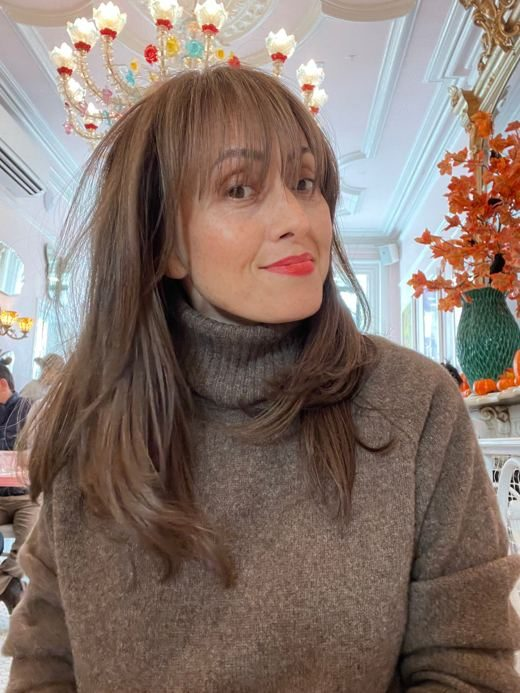
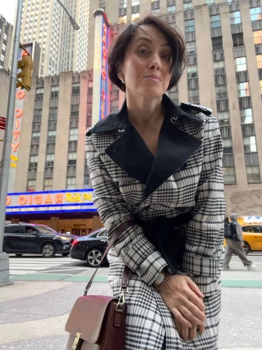

стандарты · советы · Нью-Йорк
Это стандарты, по которым я реализую себя. С ними я сначала создала внутри себя нужное состояние, и оно стало моей опорой для карьеры в корпоративном Нью-Йорке 🗽
Я не говорю следовать им обязательно, а показываю по каким правилам живу сама. Возьми то, что откликается, и сделай своим 🤍
Мой поворот случился в июле 2021 года. Я ещё училась в колледже, но наконец-то получила американский диплом. Это был всего лишь Associate degree (AS), но мне нужен был американский диплом, чтобы меня начали видеть своей — мой билет в корпоративный мир Нью-Йорка. В тот год мой коричневый костюм 🤎 сменился ярким светло-голубым 💙 Это было начало, к которому я упорно шла.
P.S. Пять лет до этого я убирала дома, работала безумные часы в продуктовом магазине и подрабатывала в офисе. В офисе я была «just extra hands», и никто не признавал, что я overqualified, чтобы ставить печати и рассылать почту. Им нужны были мои руки, а не голова. Их девизом было: «Being important is nice, but being nice is important».
Качество того, что ты делаешь: вкладываешь ли ты на все 100%, даже — и особенно — когда этого никто не видит? Твоя идентичность — ты всё ещё несёшь в себе убеждение, что ты не одна из них? Или «я была кем-то в своей стране, а тут…»? Как ты выглядишь, как ходишь, как говоришь и что говоришь. С кем общаешься: токсичные люди? Советы от тех, кто сам никогда не решался на смелые шаги? На чём фокусируешься. На что тратишь энергию — думскроллинг или целенаправленная учёба? Какие у тебя хобби.
Ничего из этого не случайно. Это кирпичики, на которых строится твой новый мир 🧱
Представь мир, где ты успешная: ты идёшь по этим улицам, носишь эту одежду, так говоришь, так себя ведёшь, встречаешь таких людей. Жизнь потом всё скорректирует. Задача построить этот мир в голове, жить им и дышать им 🌍
Замечай, как меняются сознание и подсознание и как отвечает тело. Для этого может понадобиться своего рода отшельничество: уйти от прежнего шума, даже от отношений. Они будут частью твоего мира, а сейчас фокус на твоём состоянии и на той, кем ты становишься 🦋
⚠️ Пока ты не проектируешь свой мир сама, его строят за тебя обстоятельства, окружение и чужие ожидания.
💭 Начни с вопроса: «Что в моей жизни выбрано мной, а что просто случилось?»
Сходи в магазин специально за этим, не заказывай онлайн 🛍 Примерь и выбери идеальный деловой костюм или сет для собеседований и встреч. Найди вещи, в которых чувствуешь «это моё». Может найтись не с первого раза, и это нормально.
Продумай всё до мелочей: носки, обувь, причёску 👠 Образ должен быть цельным и у тебя самой связываться с успехом. Цвета у всех свои: у меня был коричневый 🤎, потом я влюбилась в яркий светло-голубой 💙 Классический тёмно-синий тоже хорош, но выбирай своё.
P.S. Повесь его в шкафу в первый ряд, береги его и регулярно отдавай в чистку.
Носи его в моменты, которые касаются карьеры и новой тебя. Не только на собеседования, но и на мероприятия и нетворкинги, которые приближают тебя к нужной вакансии. Даже когда никто не оценивает.
Так ты привыкаешь чувствовать себя в нём собой новой.
Не трать силы на выбор.
Образ всегда готов: пришла, сняла, аккуратно повесила.
Открываешь шкаф и сразу видишь себя успешной. Это ежедневная визуализация ✨

моя частота
Звучит странно, но я слежу за своей частотой.
Она складывается из мелочей:
как себя ведёшь 🙋♀️
что ешь 🥗
оставляешь ли чаевые и излучаешь ли благодарность 💵
что думаешь о себе и как себя представляешь 🪞
Лучше ходить в хорошие места редко, чем часто в плохие. Это учит умеренности и держит тебя на уровне.
Когда ты искренне благодаришь людей, а они искренне благодарны тебе, происходит обмен энергией 🤝
Оставаться настроенной на своё состояние, но не быть приторно-позитивной. Я заметила: слишком много высоких эмоций сразу всегда заканчиваются спадом. Сначала вниз, в грусть, потом приходится возвращаться в баланс. Эту эйфорию я называю «праздностью» и не люблю её так же, как уныние.
🌊 Нужны не пики, а ровная и спокойная частота. Частота осознанности, достоинства и изобилия души и характера.
⚠️ Наверх ведёт система, а у системы свои правила. Незаметно начинаешь подстраиваться: улыбаешься тем, кто неприятен, смеёшься над несмешным, молчишь там, где надо сказать. А потом смотришь в зеркало и не узнаёшь себя. Положение всё ближе, а тебя самой всё меньше.
Амбиции убивать не нужно 🔥 Вопрос в том, чем ты платишь за каждый шаг вверх.
Заискивающий говорит: «Я сделаю всё, что вы скажете». Достойный говорит: «Вот что я умею. И вот чего я не сделаю никогда» 💎
Мои правила:
📚 Учиться у людей можно и нужно. Уважать, но не поклоняться.
🙏 Благодарить, но не льстить.
👔 Подстраиваться в форме, но не в сути. Можно сменить одежду, тон, язык, но не совесть.
🤲 Помнить, что человек внизу лестницы такой же, как тот, кто наверху. То, как ты обращаешься с теми, кто ничего не может тебе дать, показывает, осталась ли ты собой.
🪜 Иди наверх. Только не оставляй Себя на нижних ступеньках.
Есть не единичные моменты, разговоры и состояния, где воздух будто тяжелеет: пустая болтовня, сплетни, бесконечное уныние без дела, жалобы по кругу — всё это затягивает как болото 😩 Сначала у меня гаснет энергия, потом мысли, потом становится тяжело даже телу.
В такие моменты я думала, что со мной что-то не так. Теперь я понимаю, что это не слабость, а сигнал. Как организм отторгает яд, так и душа отказывается дышать тем, что её отравляет 🧭
Важно: низкая вибрация — это состояние, а не ты. Помогай себе. Ты сама себе первый лучший друг. Тот, кто в депрессии, не враг, ему тяжело. Можно беречь себя от болота и при этом протянуть руку тому, кто в нём тонет. Протянуть руку можно, не ложась рядом 🤝
Что помогает мне:
🚪 Уходить вовремя. Не оправдываться и не ждать, пока станет совсем плохо.
📿 Поминание. «Воистину, сердца утешаются при поминании Аллаха» (13:28).
🏃♀️ Движение и дело. Даже маленькое: помыть посуду, выйти на воздух, помочь кому-то и не ждать ничего взамен или аплодисментов.
🌟 Люди со светом. Те, рядом с кем хочется жить. Не стесняйся искать их и держаться за них.
🩺 Забота о теле. Иногда тяжесть — это усталость, недосып или болезнь. Если по-настоящему плохо, это повод прийти и к врачу.
Если ты устроена так же, не стыдись этого. Твоя чувствительность — не приговор, а компас 🧭
💫 Береги свой свет. Не каждый воздух годится для дыхания.
Многие хотят власти, известности, авторитета. Но видят их только снаружи: должность, деньги, подписчики, красивая картинка. Это упаковка 📦
А упаковка без содержимого — пустая коробка. Рано или поздно её открывают.
Правильно упаковать себя — это то, что ты кладёшь внутрь. Каким человеком ты становишься, пока идёшь наверх ✨
Власть портит людей. И часто дело не только в человеке, а в самой системе: она награждает тех, кто угождает, а не тех, кто говорит своим голосом. Поэтому я люблю людей, которые говорят за себя 🗣️
Что я кладу внутрь:
🧭 Принципы. То, чего я не сделаю никогда, даже ради должности.
🗣️ Свой голос. Говорить за себя, даже когда молчать удобнее.
📚 Знания и навыки. Их не отнимет ни новый начальник, ни новая страна.
🤲 Отношение к людям. Особенно к тем, кто ничего не может мне дать.
🌊 Своё состояние. Ровное и спокойное, без погони за чужим одобрением.
Снаружи — костюм, образ, стиль 👗 Это тоже важно, я писала об этом в стандарте «Будь архитектором своего мира». Но костюм работает, только когда внутри него есть человек.
🤖 Про технологии. ИИ должен помогать делать скрытое ясным. Не строить ещё одну красивую упаковку поверх пустоты, а показывать, что внутри: где правда, а где обёртка.
💫 Упакуй себя изнутри. Снаружи это станет видно само.

в своём кадре
🎥👀 Взгляд со стороны (эффект фильма). Всегда наблюдайте за собой в моменте, будто вы снимаете кино про собственную жизнь. Следите за своим состоянием, находясь среди людей, — это учит глубокой осознанности и самообладанию 🧘♀️✨
📊💡 Сбор данных вместо страха. Ходите на нетворкинг-мероприятия, заводите новые знакомства и посещайте собеседования — даже если вы точно знаете, что вакансия вам не подходит. Воспринимайте это не как стресс, а как полевое исследование и сбор данных. Каждый такой опыт — это ценная информация о вас самих 🗺️
✨🌟 Восхищайтесь, но не копируйте. Когда вы встречаете людей, чья уверенность, манера держаться или юмор приковывают всеобщее внимание, это вдохновляет. Ловушка здесь — попытаться полностью скопировать чужую жизнь или личность. Не делайте этого. Сфокусируйтесь не на подражании, а на своём собственном состоянии 🧠💎
🔍🧭 Исследуйте свои триггеры. Фиксируйте, какие черты характера, темы разговоров или типы людей вызывают у вас негатив. Это отличная карта ваших внутренних зон роста 🗺️⚡
🏖️👶 Песочница жизни. Представьте всех людей вокруг как детей на общей игровой площадке. Они все разные: кто-то капризный, кто-то шумный, кто-то классный или заносчивый. Вы пришли сюда, чтобы строить свой собственный замок, а не оценивать чужие формочки. Просто наблюдайте 🏰🪴
📝🎭 Создайте свой сценарий. Напишите короткую, адекватную и ёмкую историю о себе. Рассказывайте её каждый раз, когда знакомитесь или когда вас спрашивают: «Расскажите о себе». Чёткая самопрезентация снимает лишнее напряжение 🎤📖
🍷🏃♀️✨ Выходите в поле за энергией. Знакомьтесь везде. Энергия имеет значение, и её нужно пробовать на вкус. Вступайте в беговые клубы, ходите на литературные чтения или дегустации вина. Совсем не обязательно посещать каждое событие — достаточно заглядывать туда время от времени, чтобы оставаться в потоке городской жизни 🌿🥂